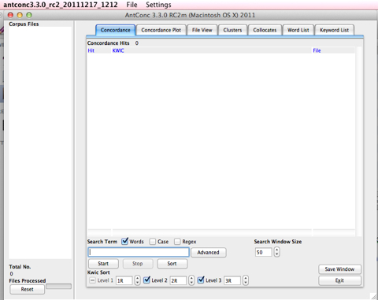
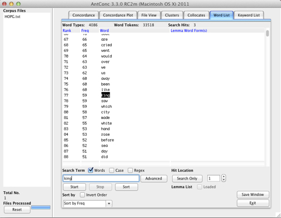
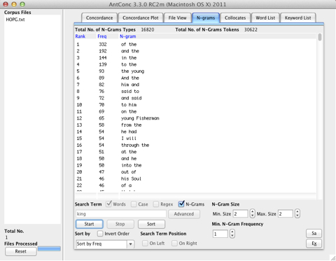
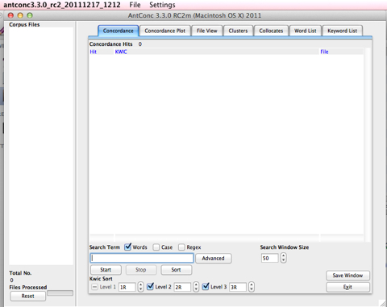
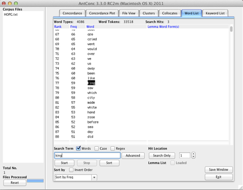
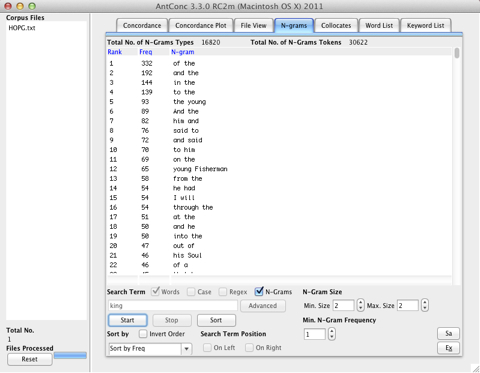

Using Antconc: Notes 1
02/02/12 18:50 Filed in: Info
Here is a short instruction on using Antconc for simple statistical analysis.
1. Download and install Antconc
You can download Antconc here.
If you are using Mac OS X 10.7 (Lion), make sure you download the latest release, for me it was AntConc 3.3.0m (RC2. Build 201112171212).
On Macs you will need X11. It is part of the standard distribution. If you cannot see it in your /Applications/Utilities folder, you need to install it from the distribution DVD or media.
2. Start Antconc
On Macs you might need to start X11 first, before you start Antconc.
Once you start Antconc, you should see a window similar to this one:

In the File Menu select Open (File

Open the HOPG.txt file in the Corpus folder of our course folder (or any other text you want to use). Note: it should be a text or a XML file.
3. Generate a decreasing frequency profile
Select the Word List tab and type in some search term, for example “king”, and select the “Start” button, to get a frequency profile:

You can see the number of Word Types and Word Tokens in the line above the frequency profile output. You can use it to calculate the type-token ratio, in this case 4086 / 33518.
4. Generate a bigram model or decreasing frequency profile
Now select the Clusters tab:

Activate N-Gram as seen below. The name of the tab changes to N-grams. The N-Gram Size is set to 2, and under Min N-Gram Frequency you can cut out low-frequent N-Grams by increasing 1 to any number.

Type in a search term, like for example “king”, and press Start. You will see the decreasing frequency profile for all bigrams as below:

You can see the counts for N-Gram Types and N-Gram Tokens in the line above the frequency profile. In this case we can estimate the probability of a bigram like “of the” as 332/30622, which is the number of occurrences of “of the” divided by the total number of bigrams. The total number of N-Grams from a text with k tokens is: k - (N - 1)
You can download Antconc here.
If you are using Mac OS X 10.7 (Lion), make sure you download the latest release, for me it was AntConc 3.3.0m (RC2. Build 201112171212).
On Macs you will need X11. It is part of the standard distribution. If you cannot see it in your /Applications/Utilities folder, you need to install it from the distribution DVD or media.
2. Start Antconc
On Macs you might need to start X11 first, before you start Antconc.
Once you start Antconc, you should see a window similar to this one:

In the File Menu select Open (File
Open the HOPG.txt file in the Corpus folder of our course folder (or any other text you want to use). Note: it should be a text or a XML file.
3. Generate a decreasing frequency profile
Select the Word List tab and type in some search term, for example “king”, and select the “Start” button, to get a frequency profile:

You can see the number of Word Types and Word Tokens in the line above the frequency profile output. You can use it to calculate the type-token ratio, in this case 4086 / 33518.
4. Generate a bigram model or decreasing frequency profile
Now select the Clusters tab:
Activate N-Gram as seen below. The name of the tab changes to N-grams. The N-Gram Size is set to 2, and under Min N-Gram Frequency you can cut out low-frequent N-Grams by increasing 1 to any number.
Type in a search term, like for example “king”, and press Start. You will see the decreasing frequency profile for all bigrams as below:

You can see the counts for N-Gram Types and N-Gram Tokens in the line above the frequency profile. In this case we can estimate the probability of a bigram like “of the” as 332/30622, which is the number of occurrences of “of the” divided by the total number of bigrams. The total number of N-Grams from a text with k tokens is: k - (N - 1)